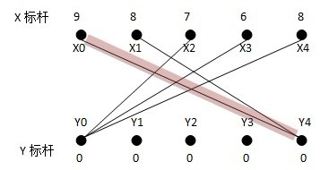
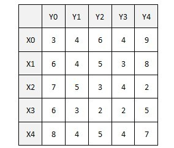
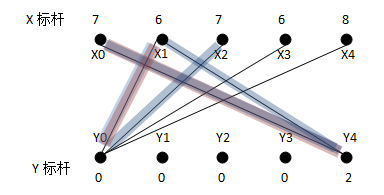
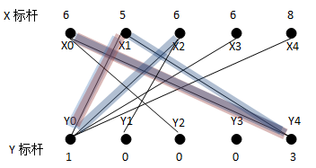
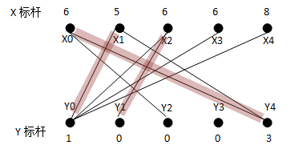

Table of Contents
1 求最大权二分匹配的KM算法
1.1 简单回顾
- 匹配 给定一个二分图G，M为G边集的一个子集，如果M满足当中的任意两条边都不依附于同一个顶点，则称M是一个匹配 。
- 极大匹配(Maximal Matching) 是指在当前已完成的匹配下,无法再通过增加未完成匹配的边的方式来增加匹配的边数。
- 最大匹配(maximum matching) 所有极大匹配当中边数最大的一个匹配。选择这样的边数最大的子集称为图的最大匹配问题。
- 完全匹配/完备匹配 如果一个匹配中，图中的每个顶点都和图中某条边相关联，则称此匹配为完全匹配 ，也称作完备匹配。
- 完美匹配 如果所有点都在匹配边上，称这个最大匹配是完美匹配。
- 求二分图最大匹配可以用最大流( \(Maximal Flow\) )或者匈牙利算法( \(Hungarian Algorithm\) )
- 等价子图 设 \(G(V,E)\) 为二部图， \(G'(V,E')\) 为二部图的子图。如果对于 \(G'\) 中的任何边< \(x,y\) >满足， \(L(x)+ L(y)== W_{x,y}\) ，我们称 \(G'(V,E')\) 为 \(G(V,E)\) 的等价子图
- 最佳匹配 如果 \(G\) 为加权二分图，则权值和最大的完备匹配称为最佳匹配
- 求一个二分图的最佳匹配的普遍算法是 \(KM(Kuhn-Munkres)\) 算法。
1.2 定理：
设 \(M\) 是一个带权完全二分图 \(G\) 的一个完备匹配，给每个顶点一个可行顶标(第 \(i\) 个 \(x\) 顶点的可行标用 \(lx[i]\) 表示，第 \(j\) 个 \(y\) 顶点的可行标用 \(ly[j]\) 表示)
如果对所有的边 \((i,j)\) \(in\) \(G\) ,都有 \(lx[i]+ly[j]>=w[i,j]\) 成立( \(w[i,j]\) 表示边的权)。 如果所有满足 \(lx[i]+ly[j]==w[i][j]\) 的边组成的导出子图中存在一个完美匹配，那么这个完美匹配肯定就是原图中的最大权匹配。
理由很简单： 这个匹配的权值之和恰等于所有顶标的和; 由于上面的那个不等式，另外的任何匹配方案的权值和都不会大于所有顶标的和。
- 二分图最佳匹配还是二分图匹配，所以跟和匈牙利算法思路差不多
- 二分图是特殊的网络流，最佳匹配相当于求最大（小）费用最大流，所以 \(FF\) 方法也能实现
- 尽量找最大的边进行连边，如果不能则换一条较大的
1.3 模板
改自kuangbin的模板( 正确性留给读者自行验证 )
/* KM算法 * 复杂度O(nx*nx*ny) * 求最大权匹配 * 若求最小权匹配，可将权值取相反数，结果取相反数 * 点的编号从0开始 */ const int N = 310; const int INF = 0x3f3f3f3f; int nx, ny; //两边的点数 int g[N][N];//二分图描述，g[x][y]表示边权。 int linker[N], lx[N], ly[N]; //y中各点匹配状态， x,y中的点标号 int slack[N]; bool visx[N], visy[N]; bool DFS(int x) { visx[x] = true; for(int y = 0; y < ny; y++) { if(visy[y]) continue; int tmp = lx[x] + ly[y] - g[x][y]; if(tmp == 0) { visy[y] = true; if(linker[y] == -1 || DFS(linker[y])) { linker[y] = x; return true; } } else if(slack[y] > tmp) slack[y] = tmp; } return false; } int KM() { memset(linker, -1, sizeof(linker)); // lx 初始为 -inf ，ly 初始为 0 memset(ly, 0, sizeof(ly)); for(int i = 0; i < nx; i++) { lx[i] = -INF; for(int j = 0; j < ny; j++) if(g[i][j] > lx[i]) lx[i] = g[i][j]; } for(int x = 0; x < nx; x++) { for(int i = 0; i < ny; i++) slack[i] = INF; //初始slack为 inf while(true) { memset(visx, false, sizeof(visx)); memset(visy, false, sizeof(visy)); if(DFS(x))break; //若成功（找到了增广轨），则该点增广完成，进入下一个点的增广 //若失败（没有找到增广轨），则需要改变一些点的标号，使得图中可行边的数量增加。 //方法为：将所有在增广轨中（就是在增广过程中遍历到）的X方点的标号全部减去一个常数d， //所有在增广轨中的Y方点的标号全部加上一个常数d int d = INF; for(int i = 0; i < ny; i++) if(!visy[i] && d > slack[i]) d = slack[i]; if(d == inf) return -1; for(int i = 0; i < nx; i++) if(visx[i]) lx[i] -= d; for(int i = 0; i < ny; i++) { if(visy[i])ly[i] += d; else slack[i] -= d; } } } int res = 0; for(int i = 0; i < ny; i++) if(linker[i] != -1){ res += g[linker[i]][i]; if(g[linker[i]][i] == -inf) return -1; } return res; } //HDU 2255 int main() { int n; while(scanf("%d", &n) == 1) { for(int i = 0; i < n; i++) for(int j = 0; j < n; j++) scanf("%d", &g[i][j]); nx = ny = n; printf("%d\n", KM()); } return 0; }
。
1.4 流程
\(Kuhn－Munkras\) 算法流程：
- 初始化可行顶标的值
- 用匈牙利算法寻找完备匹配
- 若未找到完备匹配则修改可行顶标的值
- 重复 2. 3.直到找到相等子图的完备匹配为止
1.5 栗子
初始化时X标杆为该顶点上的最大权重，而Y标杆为0
 
上图中，有 \(x0 -> y4\) ; \(x1 -> NULL\)
标杆的作用 ： 据传统的算法描述，能够进入二分子图的边的条件为 \(L(x)+L(y)>=weight(x \ y)\)
当找不到增广路径时，对于搜索过的路径上的 \(XY\) 点，设该路径上的 \(X\) 顶点集为 \(S\) ， \(Y\) 顶点集为 \(T\) ，对所有 \(xi \in S , yi \notin T\) ，计算 \(d=min{(L(xi)+L(yj)-weight(xi \ yj))}\) ，
从 \(S\) 集中的 \(X\) 标杆中减去 \(d\) ，并将其加入到 \(T\) 集中的 \(Y\) 的标杆中。 （ \(xi=xi-d (x \in S)\) , \(yi=yi+d (yi \in T)\) ）
由于 \(S\) 集中的 \(X\) 标杆减少了，而不在 \(T\) 中的 \(Y\) 标杆不变，相当于这两个集合中的 \(L(x)+L(y)\) 变小了，也就是，有新的边可以加入二分子图了。
从贪心选边的角度看，我们可以为 \(X0\) 选择新的边而抛弃原先的二分子图中的匹配边，也可以为 \(X1\) 选择新的边而抛弃原先的二分子图中的匹配边，
我们不能同时选择 \(X0\ Y4\) 和 \(X1\ Y4\) ，因为这是一个不合法匹配，这个时候， \(d=min{(L(xi)+L(yj)-weight(xi \ yj))}\) 的意义就在于，我们选择一条新的边，这条边将被加入匹配子图中使得匹配合法，选择这条边形成的匹配子图，与原先的匹配子图加上这条非法边组成的非法匹配子图的权重和（如果它是合法的，它将是最大的）差值最少，即权重最大。
简而言之 原先的不合法匹配（它的权重最大，因为我们总是从权重最大的边找起的）的权重为 \(W\) ， 新的合法匹配为 \(W'\) ， \(d\) 为 \(min{(W-W’i)}\)
在这个例子中， \(S= \{ X0, X1 \}，Y= \{ Y4 \}\) ，求出最小值 \(d=L(X1)+L(Y0)-weight(X1 \ Y0)=2\) ，得到新的二分子图

重新为 \(X1\) 寻找增广路径，找到 \(X1Y0\)
可以看到新的匹配子图的权重为 \(9+6=15\) ，比原先的不合法的匹配的权重 \(9+8=17\) 正好少 \(d=2\) 。
接下来从 \(X2\) 出发找不到增广路径，其走过的路径如蓝色的路线所示。 形成的非法匹配子图： \(X0Y4\) ， \(X1Y0\) 及 \(X2Y0\) 的权重和为 \(22\) 。
在这条路径上，只要为 \(S=\{ X0，X1，X2 \}\) 中的任意一个顶点找到新的匹配，就可以解决这个问题，于是又开始求 \(d\) 。
\(d=L(X0)+L(Y2)-weight(X0 \ Y2)=L(X2)+L(Y1)-weight(X2 \ Y1)=1\) . 新的二分子图为：

重新为 \(X2\) 寻找增广路径，如果我们使用的是深搜，会得到路径： \(X2->Y0->X1->Y4->X0->Y2\) ， 即奇数条边而删除偶数条边，新的匹配子图中由这几个顶点得到的新的权重为 \(21\) ；
如果使用的是宽搜，会得到路径 \(X2Y1\) ，另上原先的两条匹配边，权重为 \(21\) 。
假设我们使用的是宽搜，得到的新的匹配子图为：

接下来依次类推，直到为X4找到一个匹配点。
\(KM\) 算法的最大特点在于利用标杆和权重来生成一个二分子图，在该二分子图上面找最大匹配， 而且，当些仅当找到完备匹配，才能得到最佳匹配。
标杆和权重的作用在于限制新边的加入，使得加入的新边总是能为子图添加匹配数，同时又令权重和得到最大的提高。
\(KM\) 算法优势仅仅在于编程容易。
KM算法也有其不可避免的局限性，就是必须用邻接矩阵来表示。这样会浪费很多的空间，尤其是图相当稀疏的时候。
而对于十分稀疏的图，许多优秀的费用流算法效率是很高的。
这并不说明KM算法不如费用流，毕竟在信息学竞赛中，编程的复杂度也是一个相当重要的需要考虑的因素
–Byvoid
1.6 几种转化
- 最小权值匹配，取反
- 没有完备匹配，赋0
- 边权之积最大，取对数
1.7 KM 题目
1.8 链接
文字叙述了个栗子，没图！具体过程挺wo详mei细you的kan
提供了一份改自kuangbin的板模
注释挺详细的
题目列表，（对，题wo目zhi就zuo是le来ji自dao这里）
有图有栗子有题目，好评
有图+1
关于复杂度
值得注意的一点是，按照上述d的定义去求d的话需要O(N^2)的时间，因为d需要被求O(N^2)次，这就成了算法 的瓶颈。可以这样优化：设slack[j]表示右边的点j的所有不在导出子图的边对应的lx[i]+ly[j]-w[i][j]的最小值，在 find过程中，若某条边不在导出子图中就用它对相应的slack值进行更新。然后求d只要用O(N)的时间找到slack 中的最小值就可以了。
ORZ dalao
KM算法的几种转化
求最小(大)权匹配的费用流建模方法
关于 FF
- 《算法竞赛入门经典 训练指南》 P348
- http://www.nocow.cn/index.php/Kuhn-Munkres算法